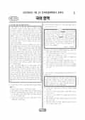

문제지

전국연합학력평가 · 시·도교육청 주관
2022년 7월 고3 학력평가 국어 언어와매체 1등급컷은 원점수 93점(추정), 표준점수 최고점은 134점입니다.
원점수 1등급컷은 공식 발표값이 아니라 EBSi·입시기관 값입니다. 등급별 값은 등급컷 표, 출처 구분은 데이터 원칙에 있습니다.

시험지를 먼저 풀어 보세요. 등급컷·표준점수·난이도는 흐리게 가려 뒀어요.
| 등급 | 원점수 | 표준점수 | 백분위 |
|---|---|---|---|
| 1 | 93 | 129 | 95 |
| 2 | 86 | 124 | 88 |
| 3 | 78 | 118 | 77 |
| 4 | 67 | 109 | 59 |
| 5 | 51 | 96 | 40 |
| 6 | 31 | 80 | 23 |
| 7 | 21 | 71 | 8 |
| 8 | 17 | 68 | 4 |
등급별 컷 · 입시기관 2곳 원점수 추정 종합(이투스·종로학원) · 공통+선택 점수 조합에 따라 다를 수 있음 · 만점 100점
| 등급 | 표준점수 이상 | 인원(명) | 비율 |
|---|---|---|---|
| 1 | 129 | 14,621 | 5.29% |
| 2 | 124 | 20,328 | 7.36% |
| 3 | 118 | 30,553 | 11.06% |
| 4 | 109 | 47,703 | 17.28% |
| 5 | 96 | 53,746 | 19.46% |
| 6 | 80 | 46,707 | 16.91% |
| 7 | 71 | 44,109 | 15.97% |
| 8 | 68 | 8,427 | 3.05% |
| 9 | 53 | 9,938 | 3.6% |
국어 영역 전체 응시자 기준이에요.
출처: 시·도교육청이 공개한 전국연합학력평가 성적 분석·통계자료(공개 자료 보기).
EBSi 응답자 기준으로 가장 많이 틀린 문항은 11번(2점)이고, 오답률은 59.7%입니다. 오답률 50%를 넘은 문항은 2개입니다.
| 순위 | 문항 | 배점 | 오답률 | 정답 | 많이 고른 오답 |
|---|---|---|---|---|---|
| 1 | 11번 | 2점 | 59.7% | ② | ③ 25.9% |
| 2 | 14번 | 2점 | 50.6% | ⑤ | ③ 24.8% |
| 3 | 8번 | 3점 | 49.4% | ③ | ② 18.5% |
| 4 | 13번 | 2점 | 47.9% | ④ | ② 18.6% |
| 5 | 36번 | 3점 | 47.2% | ③ | ④ 30.1% |
| 6 | 25번 | 2점 | 43.8% | ③ | ① 15.6% |
| 7 | 24번 | 2점 | 43.3% | ② | ⑤ 23% |
| 8 | 6번 | 2점 | 43.1% | ⑤ | ④ 19.9% |
| 9 | 16번 | 3점 | 42.3% | ③ | ④ 12.5% |
| 10 | 12번 | 3점 | 41.4% | ④ | ③ 19.6% |
| 11 | 15번 | 2점 | 40% | ② | ③ 15.1% |
| 12 | 17번 | 2점 | 38.4% | ③ | ④ 14.8% |
| 13 | 5번 | 2점 | 37.9% | ② | ③ 18% |
| 14 | 22번 | 2점 | 37.6% | ① | ③ 11.9% |
| 15 | 18번 | 2점 | 37.6% | ⑤ | ④ 23.3% |
EBSi 가채점 응답자 기준 · 전 문항 중 오답률 상위 15문항
출처: EBSi 역대 등급컷·오답률 공개 화면. 가채점에 참여한 EBSi 이용자 응답이라 전체 응시자 정답률과는 다를 수 있습니다.
발행 기관: 시·도교육청(전국연합학력평가). 파일 위치: 이 사이트가 보관한 사본. 저작권은 발행 기관에 있습니다. 원본과 다르거나 게시 중단이 필요하면 연락처로 알려 주세요. 등급컷 출처 구분은 데이터 원칙에서 설명합니다.
막대 색은 역대 대비 난이도 · 진한 막대가 이 시험 · 막대를 누르면 그 회차로 이동
| 회차 | 1등급컷 | 표점 최고 | 1등급 표점 | 난이도 |
|---|---|---|---|---|
| 7월 학평2022년 고3이 시험 | 93 | 134 | 129 | 쉬움 |
| 4월 학평2022년 고3 | 94 | 135 | 130 | 매우 쉬움 |
| 3월 학평2022년 고3 | 88 | 144 | 132 | 보통 |
| 10월 학평2021년 고3 | 91 | 138 | 130 | 쉬움 |
| 7월 학평2021년 고3 | 83 | 148 | 132 | 매우 어려움 |
| 4월 학평2021년 고3 | 89 | 139 | 130 | 어려움 |
| 3월 학평2021년 고3 | 76 | 142 | 131 | 매우 어려움 |
공통과목 독서는 정조의 실용적 독서를 다룬 독서론(1~3번), (가) 상상력을 정신적·후천적 기능으로 규정한 흄과 (나) 상상력을 선험적 차원에서 탐구한 칸트를 묶은 주제 통합형 인문 지문(4~9번), 딥러닝 기반 객체 탐지 모델(YOLO)의 원리를 다룬 기술 지문(10~13번), 공공 부문의 의사 결정에 경제학을 적용한 공공선택론을 다룬 사회 지문(14~17번)으로 구성되었습니다.
이 회차 국어에서 가장 많이 틀린 11번(2점, 59.7%)은 경계 상자 수를 2로 설정한 YOLO 모델의 출력을 다룬 <보기> 문항, 14번(50.6%)은 공공선택론 지문에서 답을 찾을 수 없는 질문을 고르는 문항이었습니다. 흄과 칸트의 견해를 재구성한 <보기>에 반응하는 8번(49.4%)과 객체 탐지 지문의 13번(47.9%)이 뒤를 이었습니다.
문학은 작자 미상의 고전소설 「진성운전」(18~21번), 정철 「성산별곡」·권구 「병산육곡」과 백문보의 「율정설」을 묶은 갈래 복합(22~26번), 조지훈 「꿈 이야기」와 기형도 「나리 나리 개나리」를 묶은 현대시(27~30번), 윤흥길의 소설 「양」(31~34번)으로 구성되었습니다.
문학은 오답률 50%를 넘은 문항이 없었고, 가장 많이 틀린 문항도 오답률이 40%대였습니다.
언어와 매체는 오답률 50%를 넘은 선택 문항이 없었고, 접속 조사를 다룬 문법 지문을 바탕으로 중세 국어 자료를 탐구하는 36번(3점, 47.2%)이 가장 많이 틀린 선택 문항이었습니다.
매체는 '다매체 시대, 듣기는 또 하나의 독서'를 주제로 한 도서관 실시간 인터넷 강연과 학생들의 메신저 대화(40~43번), 학생회 블로그와 학생회가 제작한 앱 화면(44~45번)을 다루었습니다.
최고점자가 천 명을 넘은 쉬운 회차였기 때문에 기술 지문 한 세트에서 점수가 갈렸습니다. 객체 탐지처럼 처리 단계가 순서대로 제시되는 지문은 단계마다 입력과 출력을 정리하며 읽으면 <보기>의 수치를 해석하기 쉽습니다.